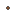

<!doctype html>
<html lang="en">
    <head>
        <meta charset="utf-8">
        <meta http-equiv="X-UA-Compatible" content="IE=edge">
        <meta name="viewport" content="initial-scale=1,user-scalable=no,maximum-scale=1,width=device-width">
        <meta name="mobile-web-app-capable" content="yes">
        <meta name="apple-mobile-web-app-capable" content="yes">
        <link rel="stylesheet" href="css/leaflet.css">
        <link rel="stylesheet" href="css/L.Control.Layers.Tree.css">
        <link rel="stylesheet" href="css/qgis2web.css">
        <link rel="stylesheet" href="css/fontawesome-all.min.css">
        <link rel="stylesheet" href="css/leaflet.photon.css">
        <style>
        #map {
            width: 888px;
            height: 656px;
        }
        </style>
        <title>State of the art of Natural Hydrogen in the worlds</title>
    </head>
    <body>
        <div id="map">
        </div>
        <script src="js/qgis2web_expressions.js"></script>
        <script src="js/leaflet.js"></script>
        <script src="js/L.Control.Layers.Tree.min.js"></script>
        <script src="js/leaflet.rotatedMarker.js"></script>
        <script src="js/leaflet.pattern.js"></script>
        <script src="js/leaflet-hash.js"></script>
        <script src="js/Autolinker.min.js"></script>
        <script src="js/rbush.min.js"></script>
        <script src="js/labelgun.min.js"></script>
        <script src="js/labels.js"></script>
        <script src="js/leaflet.photon.js"></script>
        <script src="data/Hidrgenonaturalenelmundo_0.js"></script>
        <script src="data/Proyectosdehidrgenonaturalenelmundo_1.js"></script>
        <script>
        var highlightLayer;
        function highlightFeature(e) {
            highlightLayer = e.target;

            if (e.target.feature.geometry.type === 'LineString' || e.target.feature.geometry.type === 'MultiLineString') {
              highlightLayer.setStyle({
                color: 'rgba(255, 251, 0, 0.54)',
              });
            } else {
              highlightLayer.setStyle({
                fillColor: 'rgba(255, 251, 0, 0.54)',
                fillOpacity: 1
              });
            }
            highlightLayer.openPopup();
        }
        var map = L.map('map', {
            zoomControl:false, maxZoom:28, minZoom:1
        }).fitBounds([[-143.84480096685007,-187.18940229217424],[135.02050449802923,190.6005986892983]]);
        var hash = new L.Hash(map);
        map.attributionControl.setPrefix('<a href="https://github.com/qgis2web/qgis2web" target="_blank">qgis2web</a> &middot; <a href="https://leafletjs.com" title="A JS library for interactive maps">Leaflet</a> &middot; <a href="https://qgis.org">QGIS</a>');
        var autolinker = new Autolinker({truncate: {length: 30, location: 'smart'}});
        // remove popup's row if "visible-with-data"
        function removeEmptyRowsFromPopupContent(content, feature) {
         var tempDiv = document.createElement('div');
         tempDiv.innerHTML = content;
         var rows = tempDiv.querySelectorAll('tr');
         for (var i = 0; i < rows.length; i++) {
             var td = rows[i].querySelector('td.visible-with-data');
             var key = td ? td.id : '';
             if (td && td.classList.contains('visible-with-data') && feature.properties[key] == null) {
                 rows[i].parentNode.removeChild(rows[i]);
             }
         }
         return tempDiv.innerHTML;
        }
        // modify popup if contains media
        function addClassToPopupIfMedia(content, popup) {
            var tempDiv = document.createElement('div');
            tempDiv.innerHTML = content;
            var imgTd = tempDiv.querySelector('td img');
            if (imgTd) {
                var src = imgTd.getAttribute('src');
                if (/\.(jpg|jpeg|png|gif|bmp|webp|avif)$/i.test(src)) {
                    popup._contentNode.classList.add('media');
                    setTimeout(function() {
                        popup.update();
                    }, 10);
                } else if (/\.(mp3|wav|ogg|aac)$/i.test(src)) {
                    var audio = document.createElement('audio');
                    audio.controls = true;
                    audio.src = src;
                    imgTd.parentNode.replaceChild(audio, imgTd);
                    popup._contentNode.classList.add('media');
                    setTimeout(function() {
                        popup.setContent(tempDiv.innerHTML);
                        popup.update();
                    }, 10);
                } else if (/\.(mp4|webm|ogg|mov)$/i.test(src)) {
                    var video = document.createElement('video');
                    video.controls = true;
                    video.src = src;
                    video.style.width = "400px";
                    video.style.height = "300px";
                    video.style.maxHeight = "60vh";
                    video.style.maxWidth = "60vw";
                    imgTd.parentNode.replaceChild(video, imgTd);
                    popup._contentNode.classList.add('media');
                    // Aggiorna il popup quando il video carica i metadati
                    video.addEventListener('loadedmetadata', function() {
                        popup.update();
                    });
                    setTimeout(function() {
                        popup.setContent(tempDiv.innerHTML);
                        popup.update();
                    }, 10);
                } else {
                    popup._contentNode.classList.remove('media');
                }
            } else {
                popup._contentNode.classList.remove('media');
            }
        }
        var title = new L.Control({'position':'topleft'});
        title.onAdd = function (map) {
            this._div = L.DomUtil.create('div', 'info');
            this.update();
            return this._div;
        };
        title.update = function () {
            this._div.innerHTML = '<h2>State of the art of Natural Hydrogen in the worlds</h2>';
        };
        title.addTo(map);
        var abstract = new L.Control({'position':'bottomright'});
        abstract.onAdd = function (map) {
            this._div = L.DomUtil.create('div',
            'leaflet-control abstract');
            this._div.id = 'abstract'

                abstract.show();
                return this._div;
            };
            abstract.show = function () {
                this._div.classList.remove("abstract");
                this._div.classList.add("abstractUncollapsed");
                this._div.innerHTML = 'References:<br /><br />IEA Hydrogen Technology Collaboration Programme. (2024). Task 49: Natural hydrogen workplan (2024–2026). https://www.ieahydrogen.org/wp-content/uploads/2025/08/2024_Workplan_Task-49_Natural-Hydrogen_H2TCP.pdf';
        };
        abstract.addTo(map);
        var zoomControl = L.control.zoom({
            position: 'topleft'
        }).addTo(map);
        var bounds_group = new L.featureGroup([]);
        function setBounds() {
        }
        function pop_Hidrgenonaturalenelmundo_0(feature, layer) {
            layer.on({
                mouseout: function(e) {
                    for (var i in e.target._eventParents) {
                        if (typeof e.target._eventParents[i].resetStyle === 'function') {
                            e.target._eventParents[i].resetStyle(e.target);
                        }
                    }
                    if (typeof layer.closePopup == 'function') {
                        layer.closePopup();
                    } else {
                        layer.eachLayer(function(feature){
                            feature.closePopup()
                        });
                    }
                },
                mouseover: highlightFeature,
            });
            var popupContent = '<table>\
                    <tr>\
                        <th scope="row">Nombre</th>\
                        <td>' + (feature.properties['Nombre'] !== null ? autolinker.link(String(feature.properties['Nombre']).replace(/'/g, '\'').toLocaleString()) : '') + '</td>\
                    </tr>\
                    <tr>\
                        <th scope="row">Etapa del proyecto</th>\
                        <td>' + (feature.properties['Etapa del proyecto'] !== null ? autolinker.link(String(feature.properties['Etapa del proyecto']).replace(/'/g, '\'').toLocaleString()) : '') + '</td>\
                    </tr>\
                </table>';
            var content = removeEmptyRowsFromPopupContent(popupContent, feature);
			layer.on('popupopen', function(e) {
				addClassToPopupIfMedia(content, e.popup);
			});
			layer.bindPopup(content, { maxHeight: 400 });
        }

        function style_Hidrgenonaturalenelmundo_0_0(feature) {
            switch(String(feature.properties['Etapa del proyecto'])) {
                case 'NA':
                    return {
                pane: 'pane_Hidrgenonaturalenelmundo_0',
                opacity: 1,
                color: 'rgba(35,35,35,1.0)',
                dashArray: '',
                lineCap: 'butt',
                lineJoin: 'miter',
                weight: 1.0, 
                fill: true,
                fillOpacity: 1,
                fillColor: 'rgba(255,255,255,1.0)',
                interactive: true,
            }
                    break;
                case 'Exploracion':
                    return {
                pane: 'pane_Hidrgenonaturalenelmundo_0',
                opacity: 1,
                color: 'rgba(35,35,35,1.0)',
                dashArray: '',
                lineCap: 'butt',
                lineJoin: 'miter',
                weight: 1.0, 
                fill: true,
                fillOpacity: 1,
                fillColor: 'rgba(31,120,180,1.0)',
                interactive: true,
            }
                    break;
                case 'Produccion':
                    return {
                pane: 'pane_Hidrgenonaturalenelmundo_0',
                opacity: 1,
                color: 'rgba(35,35,35,1.0)',
                dashArray: '',
                lineCap: 'butt',
                lineJoin: 'miter',
                weight: 1.0, 
                fill: true,
                fillOpacity: 1,
                fillColor: 'rgba(51,160,44,1.0)',
                interactive: true,
            }
                    break;
                case 'Recoleccion de datos':
                    return {
                pane: 'pane_Hidrgenonaturalenelmundo_0',
                opacity: 1,
                color: 'rgba(35,35,35,1.0)',
                dashArray: '',
                lineCap: 'butt',
                lineJoin: 'miter',
                weight: 1.0, 
                fill: true,
                fillOpacity: 1,
                fillColor: 'rgba(24,66,94,1.0)',
                interactive: true,
            }
                    break;
            }
        }
        map.createPane('pane_Hidrgenonaturalenelmundo_0');
        map.getPane('pane_Hidrgenonaturalenelmundo_0').style.zIndex = 400;
        map.getPane('pane_Hidrgenonaturalenelmundo_0').style['mix-blend-mode'] = 'normal';
        var layer_Hidrgenonaturalenelmundo_0 = new L.geoJson(json_Hidrgenonaturalenelmundo_0, {
            attribution: '',
            interactive: true,
            dataVar: 'json_Hidrgenonaturalenelmundo_0',
            layerName: 'layer_Hidrgenonaturalenelmundo_0',
            pane: 'pane_Hidrgenonaturalenelmundo_0',
            onEachFeature: pop_Hidrgenonaturalenelmundo_0,
            style: style_Hidrgenonaturalenelmundo_0_0,
        });
        bounds_group.addLayer(layer_Hidrgenonaturalenelmundo_0);
        map.addLayer(layer_Hidrgenonaturalenelmundo_0);
        function pop_Proyectosdehidrgenonaturalenelmundo_1(feature, layer) {
            layer.on({
                mouseout: function(e) {
                    for (var i in e.target._eventParents) {
                        if (typeof e.target._eventParents[i].resetStyle === 'function') {
                            e.target._eventParents[i].resetStyle(e.target);
                        }
                    }
                    if (typeof layer.closePopup == 'function') {
                        layer.closePopup();
                    } else {
                        layer.eachLayer(function(feature){
                            feature.closePopup()
                        });
                    }
                },
                mouseover: highlightFeature,
            });
            var popupContent = '<table>\
                    <tr>\
                        <td colspan="2">' + (feature.properties['fid'] !== null ? autolinker.link(String(feature.properties['fid']).replace(/'/g, '\'').toLocaleString()) : '') + '</td>\
                    </tr>\
                    <tr>\
                        <td colspan="2">' + (feature.properties['id'] !== null ? autolinker.link(String(feature.properties['id']).replace(/'/g, '\'').toLocaleString()) : '') + '</td>\
                    </tr>\
                    <tr>\
                        <th scope="row">Latitud</th>\
                        <td>' + (feature.properties['Latitud'] !== null ? autolinker.link(String(feature.properties['Latitud']).replace(/'/g, '\'').toLocaleString()) : '') + '</td>\
                    </tr>\
                    <tr>\
                        <th scope="row">Longitud</th>\
                        <td>' + (feature.properties['Longitud'] !== null ? autolinker.link(String(feature.properties['Longitud']).replace(/'/g, '\'').toLocaleString()) : '') + '</td>\
                    </tr>\
                    <tr>\
                        <th scope="row">Region</th>\
                        <td>' + (feature.properties['Region'] !== null ? autolinker.link(String(feature.properties['Region']).replace(/'/g, '\'').toLocaleString()) : '') + '</td>\
                    </tr>\
                    <tr>\
                        <th scope="row">Proyecto</th>\
                        <td>' + (feature.properties['Proyecto'] !== null ? autolinker.link(String(feature.properties['Proyecto']).replace(/'/g, '\'').toLocaleString()) : '') + '</td>\
                    </tr>\
                    <tr>\
                        <th scope="row">Area_exploracion</th>\
                        <td>' + (feature.properties['Area_exploracion'] !== null ? autolinker.link(String(feature.properties['Area_exploracion']).replace(/'/g, '\'').toLocaleString()) : '') + '</td>\
                    </tr>\
                </table>';
            var content = removeEmptyRowsFromPopupContent(popupContent, feature);
			layer.on('popupopen', function(e) {
				addClassToPopupIfMedia(content, e.popup);
			});
			layer.bindPopup(content, { maxHeight: 400 });
        }

        function style_Proyectosdehidrgenonaturalenelmundo_1_0(feature) {
            if (feature.properties['Area_exploracion'] >= 0.000000 && feature.properties['Area_exploracion'] <= 1.200000 ) {
                return {
                pane: 'pane_Proyectosdehidrgenonaturalenelmundo_1',
                radius: 2.0,
                opacity: 1,
                color: 'rgba(35,35,35,1.0)',
                dashArray: '',
                lineCap: 'butt',
                lineJoin: 'miter',
                weight: 1,
                fill: true,
                fillOpacity: 1,
                fillColor: 'rgba(224,123,57,1.0)',
                interactive: true,
            }
            }
            if (feature.properties['Area_exploracion'] >= 1.200000 && feature.properties['Area_exploracion'] <= 22.600000 ) {
                return {
                pane: 'pane_Proyectosdehidrgenonaturalenelmundo_1',
                radius: 5.5,
                opacity: 1,
                color: 'rgba(35,35,35,1.0)',
                dashArray: '',
                lineCap: 'butt',
                lineJoin: 'miter',
                weight: 1,
                fill: true,
                fillOpacity: 1,
                fillColor: 'rgba(224,123,57,1.0)',
                interactive: true,
            }
            }
            if (feature.properties['Area_exploracion'] >= 22.600000 && feature.properties['Area_exploracion'] <= 182.600000 ) {
                return {
                pane: 'pane_Proyectosdehidrgenonaturalenelmundo_1',
                radius: 9.0,
                opacity: 1,
                color: 'rgba(35,35,35,1.0)',
                dashArray: '',
                lineCap: 'butt',
                lineJoin: 'miter',
                weight: 1,
                fill: true,
                fillOpacity: 1,
                fillColor: 'rgba(3,140,127,1.0)',
                interactive: true,
            }
            }
            if (feature.properties['Area_exploracion'] >= 182.600000 && feature.properties['Area_exploracion'] <= 1861.800000 ) {
                return {
                pane: 'pane_Proyectosdehidrgenonaturalenelmundo_1',
                radius: 12.5,
                opacity: 1,
                color: 'rgba(35,35,35,1.0)',
                dashArray: '',
                lineCap: 'butt',
                lineJoin: 'miter',
                weight: 1,
                fill: true,
                fillOpacity: 1,
                fillColor: 'rgba(3,140,127,1.0)',
                interactive: true,
            }
            }
            if (feature.properties['Area_exploracion'] >= 1861.800000 && feature.properties['Area_exploracion'] <= 15000.000000 ) {
                return {
                pane: 'pane_Proyectosdehidrgenonaturalenelmundo_1',
                radius: 16.0,
                opacity: 1,
                color: 'rgba(35,35,35,1.0)',
                dashArray: '',
                lineCap: 'butt',
                lineJoin: 'miter',
                weight: 1,
                fill: true,
                fillOpacity: 1,
                fillColor: 'rgba(3,166,74,1.0)',
                interactive: true,
            }
            }
        }
        map.createPane('pane_Proyectosdehidrgenonaturalenelmundo_1');
        map.getPane('pane_Proyectosdehidrgenonaturalenelmundo_1').style.zIndex = 401;
        map.getPane('pane_Proyectosdehidrgenonaturalenelmundo_1').style['mix-blend-mode'] = 'normal';
        var layer_Proyectosdehidrgenonaturalenelmundo_1 = new L.geoJson(json_Proyectosdehidrgenonaturalenelmundo_1, {
            attribution: '',
            interactive: true,
            dataVar: 'json_Proyectosdehidrgenonaturalenelmundo_1',
            layerName: 'layer_Proyectosdehidrgenonaturalenelmundo_1',
            pane: 'pane_Proyectosdehidrgenonaturalenelmundo_1',
            onEachFeature: pop_Proyectosdehidrgenonaturalenelmundo_1,
            pointToLayer: function (feature, latlng) {
                var context = {
                    feature: feature,
                    variables: {}
                };
                return L.circleMarker(latlng, style_Proyectosdehidrgenonaturalenelmundo_1_0(feature));
            },
        });
        bounds_group.addLayer(layer_Proyectosdehidrgenonaturalenelmundo_1);
        map.addLayer(layer_Proyectosdehidrgenonaturalenelmundo_1);
        const url = {"Nominatim OSM": "https://nominatim.openstreetmap.org/search?format=geojson&addressdetails=1&",
        "France BAN": "https://api-adresse.data.gouv.fr/search/?"}
        var photonControl = L.control.photon({
            url: url["France BAN"],
            feedbackLabel: '',
            position: 'topleft',
            includePosition: true,
            initial: true,
            // resultsHandler: myHandler,
        }).addTo(map);
        photonControl._container.childNodes[0].style.borderRadius="10px"
        // Create a variable to store the geoJSON data
        var x = null;
        // Create a variable to store the marker
        var marker = null;
        // Add an event listener to the Photon control to create a marker from the returned geoJSON data
        var z = null;
        photonControl.on('selected', function(e) {
            console.log(photonControl.search.resultsContainer);
            if (x != null) {
                map.removeLayer(obj3.marker);
                map.removeLayer(x);
            }
            obj2.gcd = e.choice;
            x = L.geoJSON(obj2.gcd).addTo(map);
            var label = typeof obj2.gcd.properties.label === 'undefined' ? obj2.gcd.properties.display_name : obj2.gcd.properties.label;
            obj3.marker = L.marker(x.getLayers()[0].getLatLng()).bindPopup(label).addTo(map);
            map.setView(x.getLayers()[0].getLatLng(), 17);
            z = typeof e.choice.properties.label === 'undefined'? e.choice.properties.display_name : e.choice.properties.label;
            console.log(e);
            e.target.input.value = z;
        });
        var search = document.getElementsByClassName("leaflet-photon leaflet-control")[0];
        search.classList.add("leaflet-control-search")
        search.style.display = "flex";
        search.style.backgroundColor="rgba(255,255,255,0.5)" 

        // Create the new button element
        var button = document.createElement("div");
        button.id = "gcd-button-control";
        button.className = "gcd-gl-btn fa fa-search search-button";

        // Insert the button at the beginning of the search control
        search.insertBefore(button, search.firstChild);
        last = search.lastChild;
        last.style.display = "none";
        button.addEventListener("click", function (e) {
            if (last.style.display === "none") {
                last.style.display = "block";
            } else {
                last.style.display = "none";
            }
        });
        var overlaysTree = [
            {label: 'Proyectos de hidrógeno natural en el mundo<br /><table><tr><td style="text-align: center;"></td><td>0 - 1,2 km^2</td></tr><tr><td style="text-align: center;"></td><td>1,2 - 22,6 km^2</td></tr><tr><td style="text-align: center;"></td><td>22,6 - 182,6 km^2</td></tr><tr><td style="text-align: center;"></td><td>182,6 - 1861,8 km^2</td></tr><tr><td style="text-align: center;"></td><td>1861,8 - 15000 km^2</td></tr></table>', layer: layer_Proyectosdehidrgenonaturalenelmundo_1},
            {label: 'Hidrógeno natural en el mundo<br /><table><tr><td style="text-align: center;"></td><td>NA</td></tr><tr><td style="text-align: center;"></td><td>Exploracion</td></tr><tr><td style="text-align: center;"></td><td>Produccion</td></tr><tr><td style="text-align: center;"></td><td>Recoleccion de datos</td></tr></table>', layer: layer_Hidrgenonaturalenelmundo_0},]
        var lay = L.control.layers.tree(null, overlaysTree,{
            //namedToggle: true,
            //selectorBack: false,
            //closedSymbol: '&#8862; &#x1f5c0;',
            //openedSymbol: '&#8863; &#x1f5c1;',
            //collapseAll: 'Collapse all',
            //expandAll: 'Expand all',
            collapsed: true,
        });
        lay.addTo(map);
        setBounds();
        </script>
    </body>
</html>
